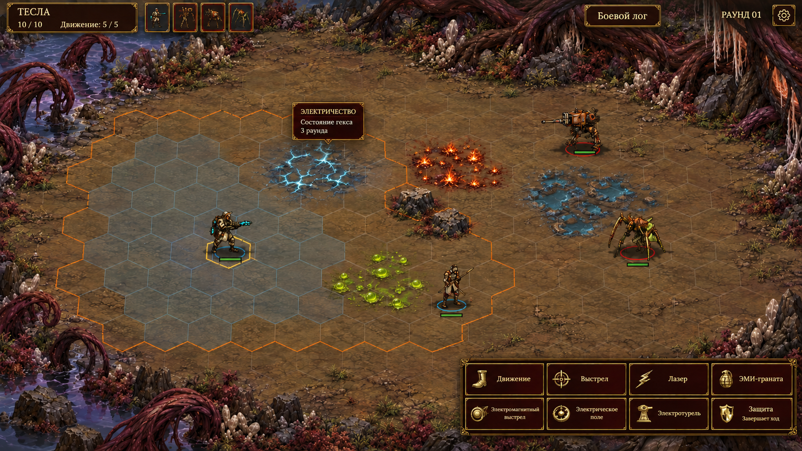
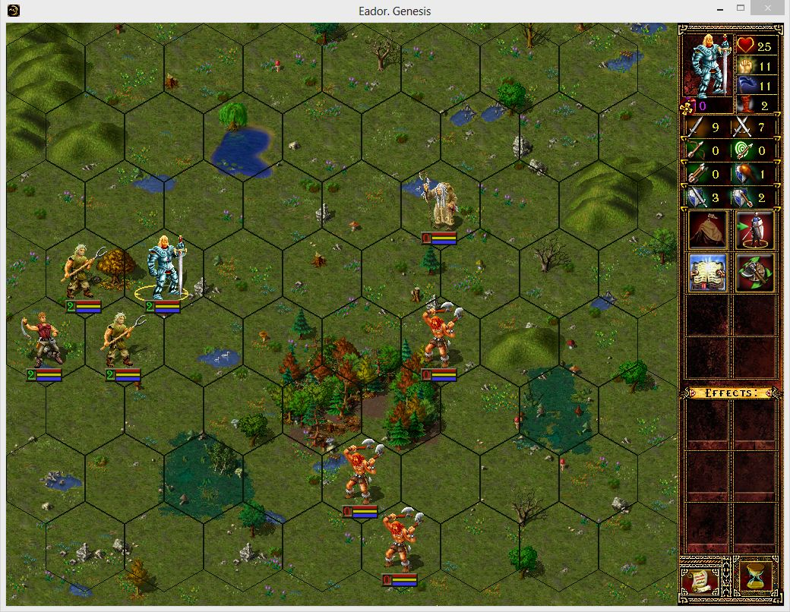
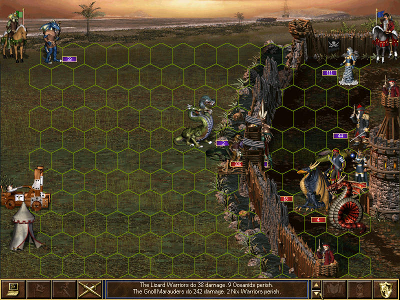
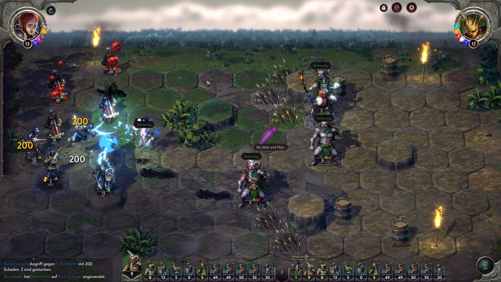

Четыре персонажа A_star, плоская гекс-карта, состояния земли и существующие действия. Сравнивайте цвет, фигуры и интерфейс.

Рабочая палитра адаптации
Концепты — иллюстрации, не внедрённые сцены. В них четыре области состояний вместо 35 исходных гексов состояний. Точные клетки, размеры фигур и расчёты подсветки нужно задавать в Godot. Данные и код игры сохранены.


